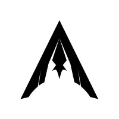

Experience

Firmware & Electrical
Waterloo Aerial Robotics Group
Sept 2025 – PresentEmbedded CAN firmware, motor testing, and PCB design work for custom drone hardware in Waterloo Aerial Robotics Group.

Systems Quality Assurance Co-op
Virtek Vision International
May 2026 – Aug 2026Maintained automated QA workflows, debugged backend issues, and ran broad regression coverage for a hardware-software system.


Socials
GitHub
LinkedIn
GoodReads (very important!)